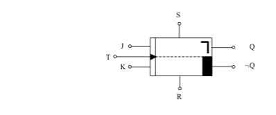

Das JK-Flipflop (Master-Slave-Flipflop)
Ein weiteres und sehr wichtiges Flipflop ist das JK-Flipflop. Mit ihm können viele Zähler und Teiler aufgebaut werden. Wie man an dem Schaltsymbol erkennt, hat auch dieses Flipflop einen Setz- und einen Rücksetzeingang. Werden diese beiden Anschlüsse verwendet, so kann man das Bauteil als gewöhnliches RS-Flipflop betreiben. Dazu sollten aber die anderen Eingänge nicht angeschlossen sein um eine Fehlschaltung am Ausgang zu vermeiden.
Das JK-Flipflop kann alternativ dazu über die beiden Eingänge J und K betrieben werden. Für diesen Fall besitzt es noch einen weiteren Eingang T, über den dem Flipflop ein Taktimpuls zugeführt werden kann.
Prinzipiell unterscheidet man zwei Arten von JK-Flipflops: Das “positiv-flankengetriggerte“ und das “negativ-flankengetriggerte“. Beim positiv-flankengetriggerten Flipflop, das in Abb. 32 dargestellt ist, erfolgt die Schaltung am Ausgang durch den ansteigenden Teil des angelegten Takt-Impulses. Das bedeutet, dass die Werte am Ausgang, die durch J und K bestimmt werden mit dem Ansteigen des Taktimpulses von L auf H ihren Wert ändern. Dargestellt ist das im Schaltsymbol durch die ansteigende Flanke eines Rechteckimpulses in der oberen rechten Ecke des Schaltsymbols.

Beim negativ-flankengetriggerten JK-Flipflop, das in der Technik hauptsächlich verwendet wird, erfolgt die Umschaltung beim Abfallen des Impulses von H auf L. Abb. 33 symbolisiert ein solches Bauteil. Das Unterscheidungsmerkmal gegenüber dem vorherigen Flipflop ist die abfallende Flanke eines Rechteckimpulses.

Wohlbemerkt sind die beiden Eingänge R und S in diesem Fall nicht angeschlossen. Sie haben nämlich Priorität, d.h. sie sind vom Takt unabhängig. Doch dazu später mehr. Wie schon bei der Unterscheidung der beiden JK-Flipflops erwähnt wurde, ist ein Taktimpuls bei diesem Bauteil sehr wichtig. Angelegt wird er am Eingang T. Von ihm hängt es z.B. ab, wie schnell sich ein Wert am Ausgang Q oder ¬Q ändern kann. Die Logik-Tafel gibt über die Werte am Ausgang genauer Auskunft.
| J | K | Q | ¬Q |
|---|---|---|---|
| 0 | 1 | 0 | 1 |
| 1 | 0 | 1 | 0 |
| 0 | 0 | Q | ¬Q |
| 1 | 1 | ¬Q | Q |
Hat der J-Eingang den Wert 0 und K den Wert 1, so liegt am Ausgang Q der Wert 0. Entsprechend hat der komplementäre Ausgang ¬Q den Wert 1.
Wechselt nun der J-Eingang auf den Wert 1 und der K-Eingang auf den Wert 0, so hat der Ausgang Q den Wert 1 und ¬Q den Wert 0.
Wenn beide Eingänge den Wert 0 haben, so ändert sich das Ausgangssignal nicht, das bedeutet, dass der vorherige Wert des Ausgangs beibehalten wird.
Falls beide Eingänge den Wert 1 aufweisen, so dreht sich das Ausgangssignal gerade um. Sowohl Q als auch ¬Q nehmen jeweils ihren komplementären Wert an. Oder anders ausgedrückt: Q nimmt den Wert von ¬Q an und ¬Q den Wert von Q.
.
Allerdings kann sich das Ausgangssignal nur ändern, wenn ein Taktimpuls wirksam geworden ist. Um also ein Umschalten des Wertes am Ausgang zu erreichen, muss unbedingt ein Takt angelegt werden. Sobald nun bei einem negativ-flankengetriggerten Flipflop eine negative Flanke an T anliegt, stellen sich die Ausgänge Q und ¬Q entsprechend den Eingängen J und K um. Die Eingänge R und S sind dagegen vom Taktimpuls unabhängig. Sobald z.B. der Setzeingang auf Masse gelegt wird, erscheint am Ausgang der Wert 1, auch dann, wenn gerade kein Taktimpuls wirksam wurde. Ebenso funktioniert die Schaltung wenn der Rücksetzeingang R mit Masse verbunden wird. Dann erscheint am Ausgang A der Wert 0. Sobald der R- oder der S-Eingang benutzt wird, ist die übrige Beschaltung (also T, J und K) nicht wirksam. In Abb. 34 ist nun das Schaltverhalten eines negativ-flankengetriggerten Flipflops dargestellt. Deutlich zu sehen ist dabei, dass ein Umschalten des Signals am Ausgang nur dann erfolgen kann, wenn der Taktimpuls T gerade abfällt. Spannungs-Diagramm (Schaltdiagramm) für ein negativ-flankengetriggertes JK-Flipflop
Zur Verdeutlichung hier nun die Erläuterung:
J=0, K=1. Da R und S den Wert 1 haben, also nicht wirksam sind, kann der Takt wirksam werden. In der Logik-Tafel sieht man, dass der Ausgang Q den Wert 0 haben muss. Deshalb nimmt Q auch im Diagramm beim Abfallen der Taktflanke T den Wert 0 an.
J=1, K=0. Damit hat Q den Wert 1.
J=K=0. Am Ausgang Q erscheint der Wert 1, da laut Logik-Tafel der Wert gleich bleibt.
- J=K=1. Nun erscheint am Ausgang das gegenteilige Signal, das zuvor an Q lag. In diesem Fall ist es der Wert 0.
- J=0, K=1. Damit hat der Ausgang Q den Wert 0.
- J=K=0. Das Signal am Ausgang bleibt gleich, also auf 0.
- Bei Punkt A wird nun der Setzeingang S auf Masse gelegt. Damit nimmt der Ausgang Q sofort den Wert 1 an. Dies geschieht wie man sieht auch ohne Taktimpuls.
- Der Setzeingang S liegt noch immer auf Masse. Somit sind die Signale von J und K nicht wirksam, wenngleich auch eine negative Taktflanke vorliegt.
- Im Punkt B ist nun der Setzeingang S wieder auf dem Wert 1. Dagegen wird der Rücksetzeingang R auf Masse, also auf den Wert 0 gelegt. Damit nimmt der Ausgang Q sofort den Wert 0 an.
- R ist noch immer auf Masse gelegt. Damit hat der Ausgang unabhängig von J und K den Wert 0.
- J=0, K=1. R hat nun wieder den Wert 1, ist also genau wie S nicht wirksam. Der Taktimpuls kann also wieder wirksam werden und schaltet deshalb bei der abfallenden Taktflanke den Ausgang Q auf den Wert 0.
Zu bemerken wäre noch, dass bei nicht wirksamen Eingängen R und S zwischen den einzelnen Takt-Impulsen die Eingänge J und K jeden beliebigen Wert annehmen können ohne dass sich der Wert am Ausgang Q verändert. Sie können auch ihren Wert zwischen zwei Impulsen mehrmals wechseln. Für das Umschalten am Ausgang ist nur interessant, was zur Zeit der abfallenden Taktflanke für Signale an J und K liegen. Nur nach diesen Werten richtet sich der Wert des Ausgangs Q. Abb. 35 zeigt die Innenschaltung des JK-Flipflops. Das Master-Slave-Flipflop besteht intern aus 2 bistabilen Multivibratoren mit gesteuerter Übernahme, die in Reihe (hintereinander) geschaltet sind. Der sogenannte Master (engl. Master = Herr, Meister) besteht aus den Verknüpfungsschaltungen V3 und V4. Die NAND-Gatter V1 und V2 bilden die dazugehörige Torschaltung. Die J- und K-Eingänge sind UND-verknüpft. Die Verknüpfungsschaltungen V5 und V6 bilden die Torschaltung des Slave (engl. Slave = Knecht, Sklave). Der Multivibrator des Slave besteht aus den Verknüpfungsschaltungen V7 und V8. Der Multivibrator verfügt noch über 2 Eingänge, die nicht über die Torschaltung laufen, also auch unabhängig vom Takt wirksam sind: L-Pegel am Setzeingang S stellt den Ausgang Q auf den Wert 1, L-Pegel am Rücksetzeingang R stellt Q wieder auf den Wert 0 zurück.